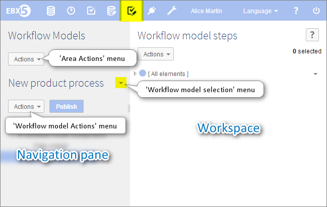

Introduction to workflow models
Collaborative work is a powerful way to produce, update, merge and validate data in a business. However it is not always easy to get people from various places and with different skills, to work together in order to meet in time a common deadline.
In this, you may find workflow modeling to be quite a useful tool. Indeed it will allow you to define data management processes involving your collaborators. To do so, you will need to:
define tasks to be performed by a user (see user task) or automatically by the system (see script task),
specify everybody's responsibilities (see creation),
send notification emails to colleagues, whose involvement is required (see notification),
know the limits of your model; what can and cannot be done (see limitations),
publish your model as a workflow to get it going (see publication).
A workflow model defines the tasks to be performed and the involved responsibilities. It can then be published as a workflow publication. It is a succession of two kinds of tasks: script and user tasks, with the possibility to have a conditional fork between two of them.
To find out a word's meaning, you can check it out in our glossary.
Workflow model overview
Access within the interface

Associated notions and tools
Script task / Script | No user are involved in this kind of task. It can be, for instance, an automatic merge, a data space snapshot creation, etc. |
User task | It involves at least one user and eventually several, who have to fulfil work items. |
Work item | Basic task carried out by the user, it has been allocated to, and whose execution allows the workflow to move forward. A work item is related to the execution of a HttpManager Component. |
Conditional fork / Condition | It decides from the result of previous tasks, which route has to be taken during the workflow. This switch is made from two derivations. For instance, one can continue the workflow normally, while the other returns to a previous task; or there could be two different parallel routes. |
Data context | It is a variable hosting temporary input/output data related to a workflow execution. Its aim is to facilitate the transfert of key information from one step to another (example: a data space name created in step 1 and reused in step 2 for another purpose). |
 User guide table of contents
User guide table of contents